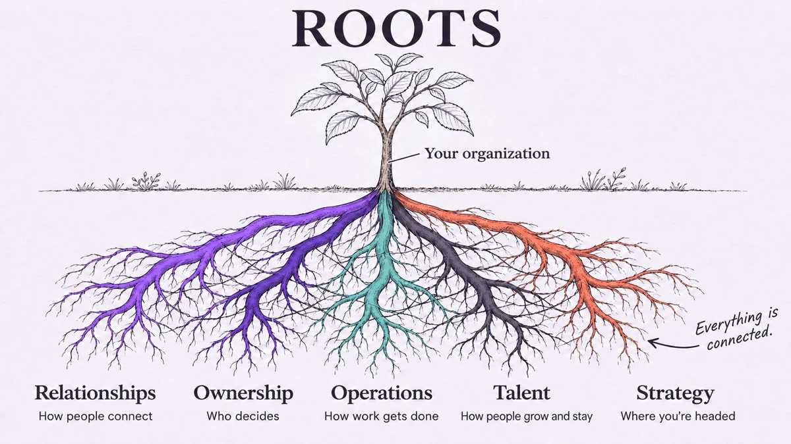

Leadership Consultant & Organizational Strategist
Something’s not working. Let’s name it.
I help founders and leaders of growing organizations uncover what’s not working and why. Then we use what we learn to make purposeful, data-informed changes together.
- 26 years leading inside complex organizations
- 17 years building and leading a school as principal
- Schools, nonprofits, and growing businesses
sound familiar?
Turnover. Bottlenecks. Culture drift. Systems nobody chose. Decisions stuck on your desk.
None of these happen in isolation. Each one is what a deeper, connected problem looks like from the outside. My job is to find where it starts.
usually it’s one root, showing up five ways
the ROOTS Assessment
Everything in your organization is connected. So is the way I look at it.
Organizations are dynamic. A hiring problem often starts with leadership; a culture problem often starts in a system. ROOTS looks at five connected areas, on purpose, so we fix causes instead of chasing symptoms.

In three to four weeks, I talk with your people, look at how the work gets done, and show you how the five connect in your organization. You get a written report, a 90-day plan, a debrief, and a 30-day check-in. Starting at $3,500, fixed fee.
Ask about the assessmenthow I work
Diagnosis before solutions. Every step on purpose.
Listen
I spend the first weeks with your people and your calendar before I recommend anything. Years of leading a school taught me which questions get real answers instead of polite ones.
Connect
I trace the turnover or the bottleneck back to what’s producing it and show you how the pieces connect. Then I tell you plainly what I find.
Build together
Guided by data results, we work on solutions aligning with your goals, each one chosen on purpose, each phase clearly scoped.
working together
After the assessment, you decide what’s next.
Change management
Most people resist change, even good change. I understand the psychology of resistance and help leaders bring their teams along with clear reasons, early wins, and steady communication, so new ways of working stick.
Coaching & team development
For you and your leadership team, so decisions stop routing through one person and your bench gets deeper.
Implementation
Building the systems and workflows the assessment calls for, including new tools and technology where they help, side by side with your team.
Ongoing advisory
A steady outside partner for organizations wanting one, with scope and length set together after the assessment.
Anything after the assessment is quoted separately.
in their words
From the leaders I’ve worked with
“I’d recommend her to any owner who knows something is wrong but can’t see what.”
Read Amanda’s full storyShow less
When I brought my business to Yvonne, I knew something was wrong, but I couldn't name what it was. I was tired, doing 100% of the service delivery and admin myself, and I was seriously considering selling. What Yvonne did wasn't just listen — she listened through the noise to figure out what I was actually saying, even when I couldn't articulate it myself. She identified that the real problem was structural: my internal process wasn't sustainable, and no amount of effort was going to fix that without changing the process itself. That was the piece I couldn't see on my own.
She refused to let me throw the business away. Instead, she rebuilt the systems underneath it — first creating infrastructure that let the business run across multiple users, then redesigning the evaluation process itself to be dramatically more efficient. In 2026 alone, that shift cut evaluation time by more than half. We also restructured how services were priced, which strengthened the business's margins.
Six months after we started, I went from 'considering an exit' to confident the business actually works — and works without me having to do everything myself. Yvonne has this rare mix of being able to figure out what people are saying when they don't even know what they're saying themselves, while also building the practical systems to fix it. She doesn't just make a business more efficient — she makes it scalable. I'd recommend her to any owner who knows something is wrong but can't see what.
“Yvonne asked questions nobody had asked us.”
Read the Cliffords’ full storyShow less
When we first started talking with Yvonne about NZone Sports, we had a vision and training, but we were still looking for the right opportunity to put it all into action. We owned a franchise, but we didn’t have a clear focus or path.
Yvonne asked questions nobody had asked us. She found a need for what we offered in home schools before we even knew there was one. As a school leader, she saw what her students were missing, and she brought us in to run an after-school sports program for them. She truly believed her students deserved a physical fitness program. It was the first home school program we ever had. Partnering with home schools had never come up anywhere in our franchise, and it was a refreshing idea.
She did more than bring us in. She brought the program to us. Every time we hit a problem, she had a solution, and she helped us keep it from happening again. Over two years, the partnership gave us revenue, but more importantly, it gave us a baseline. Yvonne’s honest feedback showed us what we were missing: how to group kids by age, how many coaches each group needs, and what has to be in place before we launch. Her feedback became our roadmap, and we’re using it now as we plan what’s next.
More than anything, Yvonne helped us see what NZone could be: a specialized home school program, something the franchise’s curriculum didn’t offer at the time. She’s a problem solver with great ideas. She’s a good listener, she’s open to feedback, and she is patient in the problem-solving process. She told us our shortfalls, and that’s exactly what we needed.
Anyone who works with Yvonne is going to get more than they expect.
about
Hi, I’m Yvonne.
I spent twenty-six years leading inside complex organizations, seventeen of them building and leading Thrive Home School Academy as principal. A school is a dynamic, unforgiving training ground: everyone has a legitimate stake, and none of them agree. It taught me how to listen into messy problems and build systems strong enough to grow with an organization.
Now I do this work as a consultant, for schools, nonprofits, and growing businesses. I uncover what’s not working, then work with you and your team, guided by data results, on solutions aligning with your goals. If something in your organization feels off and you can’t quite name it, I’d love to talk.
yes, I read every message myself
before you call
Questions people ask
What happens after the assessment?
You decide. Some leaders take the report and run with it. Others ask me to coach their leadership team or build the systems with them for a set period. There’s no obligation to keep going.
Who do you work with?
Founders and leaders of schools, nonprofits, and growing businesses. Most are at a point where what got them here isn’t carrying them forward, and they can feel it before they can name it.
What if I don’t know what the problem is?
It’s the most common way people start. Tell me what you’re noticing. Figuring out what’s underneath it is the first part of my job.
How does an engagement start?
With a conversation by phone, Zoom, or in person, whichever you prefer. If the assessment is a good fit, I send a short agreement, and we schedule the kickoff.
How much does it cost?
Our first conversation is complimentary, and the assessment starts at $3,500 for small organizations. It’s a fixed fee, so you know the full cost before we begin. Anything after the assessment is quoted separately.
How long does it take?
The assessment takes three to four weeks for most small organizations. If we keep working together afterward, we set the length based on what the assessment uncovers, and each phase of work has a clearly defined scope.
Do you work outside Colorado Springs?
Yes. I’m based in Colorado Springs and work with organizations across the country, in person or remotely, depending on the needs of your organization and the scope of work required to meet your goals.
What don’t you do?
I don’t run your programs or your daily operations, and I don’t write grants. I work with you and your team to build new systems aligned with your vision and goals.
What happens when you’re done?
You keep the systems, and your team knows how to run them. The goal is for you to eventually stop needing me.
Have a different question? Call or text 719-318-8200.
get in touch
Let’s find out what’s really going on.
You don’t need a diagnosis before you reach out. Diagnosis is my job. Our first conversation is complimentary, and I reply within two business days.
Thank you
I’ve got your message and will reply within two business days to find a time to talk.
I use your information only to reply to you, and I never sell it. Site visits are counted anonymously, with no cookies. How your information is handled.